赌 神 觉 醒
第一章 · 概率之子
原创 · 赌术×系统文 · 暗色调拟真漫画
↓ 向下滑动 ↓
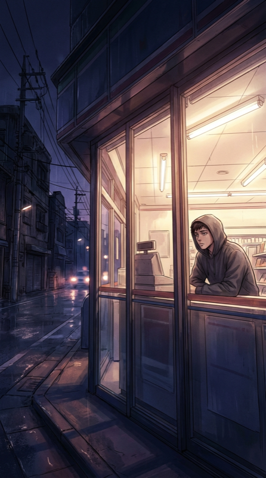
深夜 · 城市街角便利店
城市的夜，从来不属于秦默。
便利店的荧光灯把他的脸照得发白，像一个被困在玻璃箱里的标本。
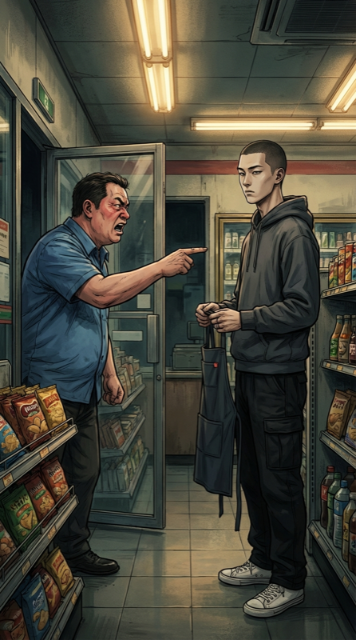
便利店内 · 中近景
老板："秦默，你被辞退了。收银总出错，我养不起废物。"
秦默面无表情地摘下围裙，叠好，放在柜台上。
（第三份工了。这个月。）
雨夜街道 · 全身背影
细雨落在霓虹灯映出的地面上，秦默把手插进卫衣口袋，漫无目的地走。
手机余额38块7。距离交房租还有4天。
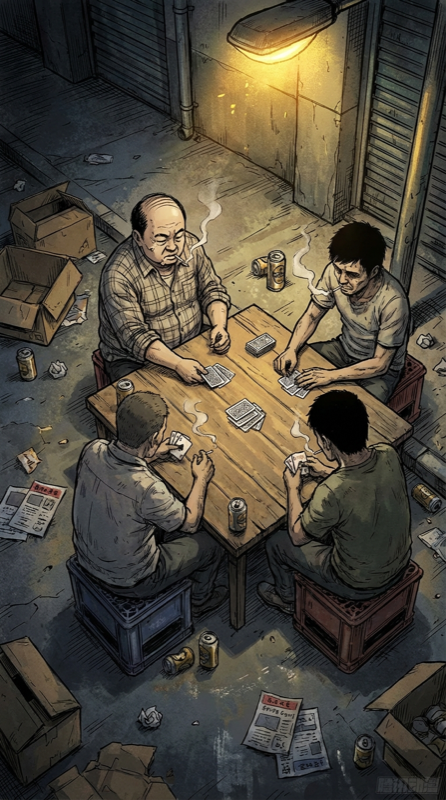
路边牌局 · 俯瞰
路灯下支着一张破折叠桌，烟雾缭绕。四个男人围坐在塑料凳上，啤酒罐散落一地。
这是刘瘸子的"地盘"——街边最小的牌局，赌注从不超过一百。
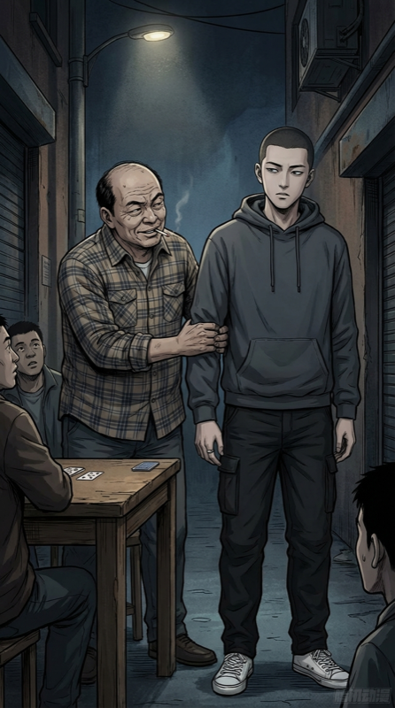
路边 · 中景
刘瘸子一把抓住路过的秦默："小伙子！来来来，三缺一！"
秦默："……我不会打牌。"
刘瘸子："不会打？正好！来送钱的最受欢迎！"
其他几个赌徒笑成一团。
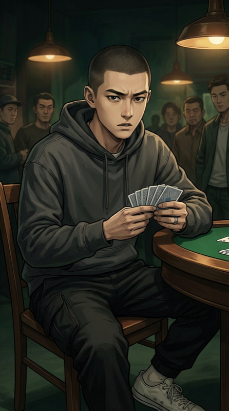
牌桌 · 手部特写
秦默拿起牌，表情微妙——不是紧张，是困惑。
（这游戏……规则到底是什么来着？梅花比红心大？还是反过来？）
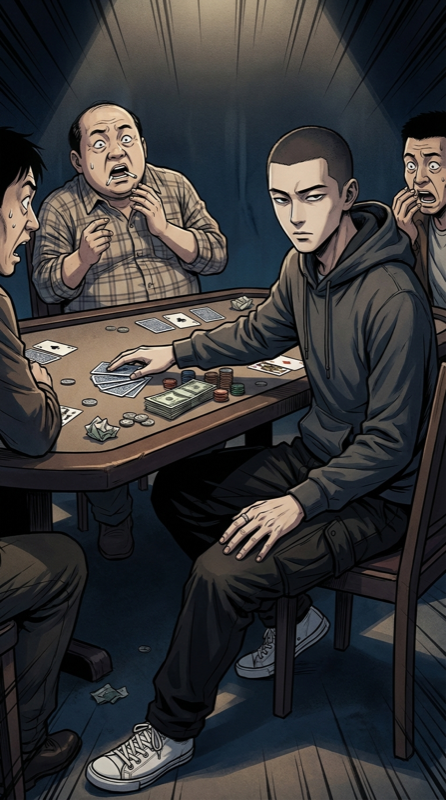
牌桌 · 动态中景
秦默随手出了一张牌——赢了。
又赢了。
连赢三把。
刘瘸子嘴里的烟差点掉了。其他三个赌徒面面相觑。
（等等，我好像还是没搞懂规则……）
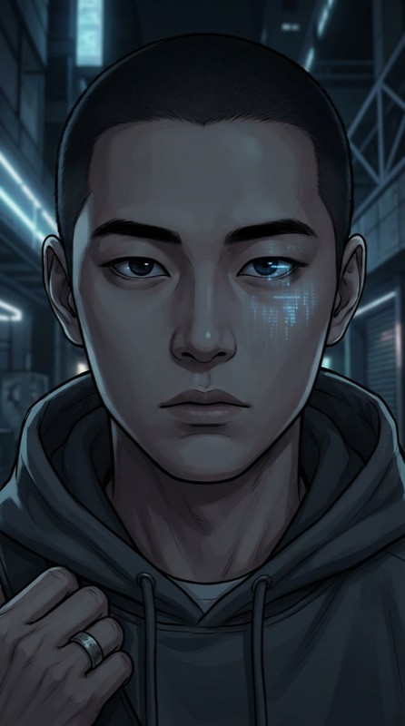
叮——
【赌神系统绑定成功】
宿主：秦默 | 等级：Lv.0 菜鸡 | 理智值：100/100
秦默眼前突然闪过一层淡蓝色的数字光芒。他以为自己低血糖犯了。
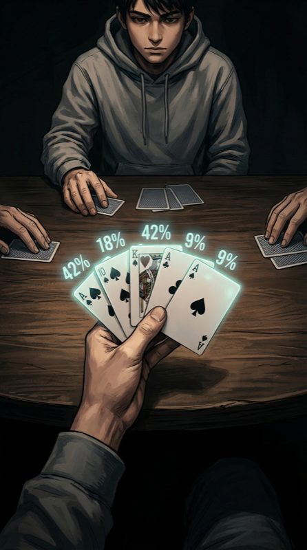
秦默视角 · 主观镜头
牌面上，每张牌的上方都浮现出半透明的数字——
胜率：78%、23%、91%……
像是有人在他的眼睛里装了一个赌场版的抬头显示器。
系统："检测到宿主智商足够但情商堪忧。已自动开启概率浮窗功能。"
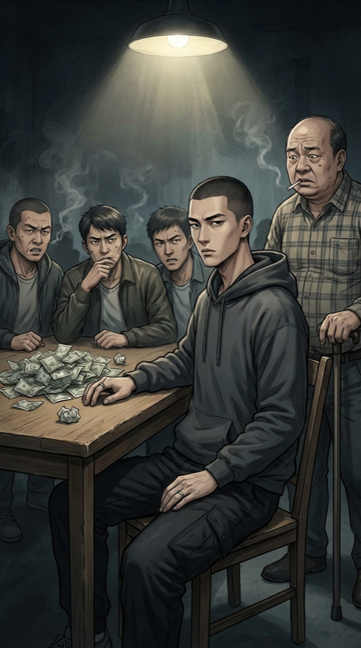
牌桌 · 中景
秦默面前的钞票越堆越高。他的脸上依然没有任何表情。
刘瘸子看他的眼神，已经从"肥羊"变成了"大佬"。
刘瘸子（小声）："这……这小子到底什么来头？"
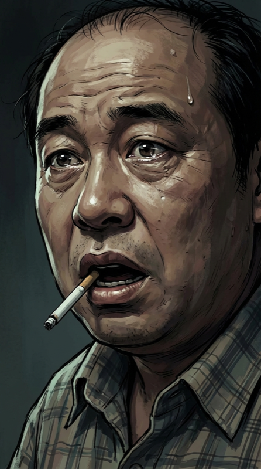
刘瘸子脸部 · 大特写
刘瘸子瞪大了眼，嘴里的烟彻底歪了。
他在道上混了三十年，从没见过赢钱赢得这么面无表情的人。
刘瘸子内心：（不是高手就是傻子……但傻子不可能连赢七把啊！）
· · · · ·
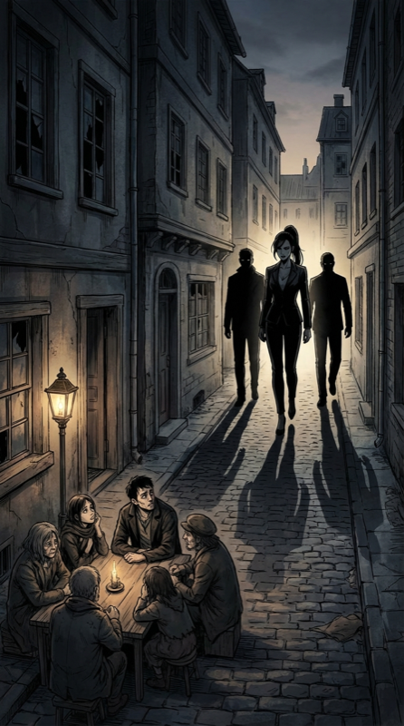
街道远处 · 广角
三道黑影从巷子深处走来。
牌桌上的人同时抬起头，气氛瞬间凝固。
刘瘸子的笑容消失了。
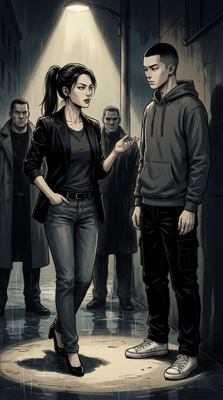
街灯下 · 中景
赵姐踏入灯光，身后跟着两个壮汉。高马尾，黑西装，眼角细纹挡不住的压迫感。
赵姐："刘瘸子，你这小摊子上藏了个有意思的人啊。"
她的目光锁定秦默。
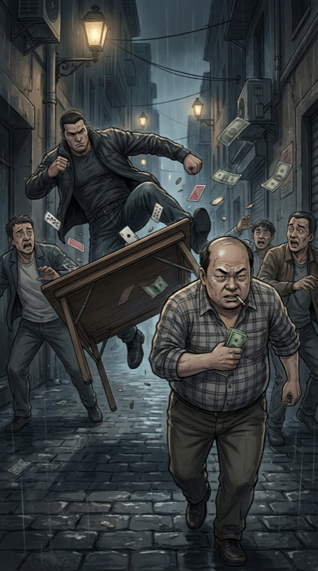
哐——！
保镖一脚踢翻了折叠桌。牌和钞票飞溅。
街头赌徒们作鸟兽散，只有刘瘸子死死护着自己那份钱。
秦默站在原地，一动不动。
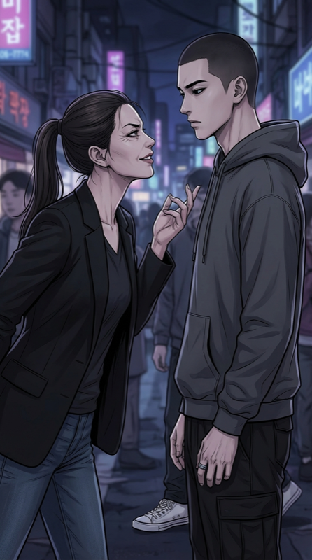
近景双人 · 对峙
赵姐走到秦默面前，上下打量。
赵姐："你叫什么？"
秦默："秦默。"
赵姐："赢了七把，心跳没变过？"
秦默："……心跳应该变吗？"
赵姐笑了。
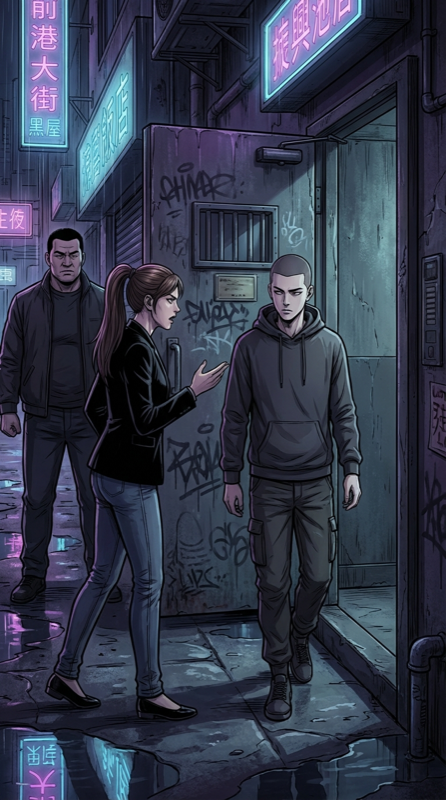
暗巷 · 广角
霓虹灯映在湿漉漉的地面上，一扇厚重的铁门隐藏在巷子深处。
赵姐在前面走，秦默在后面跟。
赵姐："铜级赌场。最低级的。你先从这里开始。"
系统："检测到赌场等级提升。建议宿主……算了，说了你也不听。"
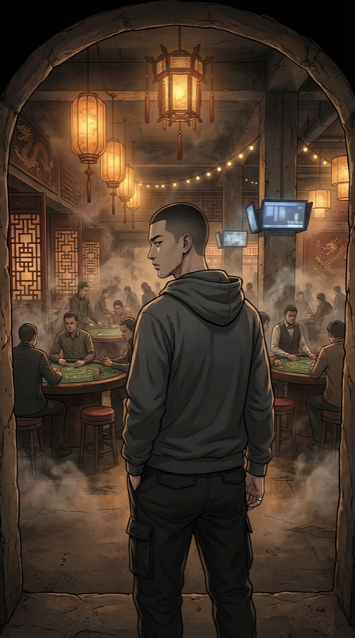
铜级赌场内部 · 全景
推开门的一刻，烟雾和喧嚣扑面而来。
琥珀色吊灯、绿色牌桌、筹码碰撞声、低沉的笑声——这是另一个世界。
秦默站在门口，表情没变。但他的手指微微蜷缩了一下。
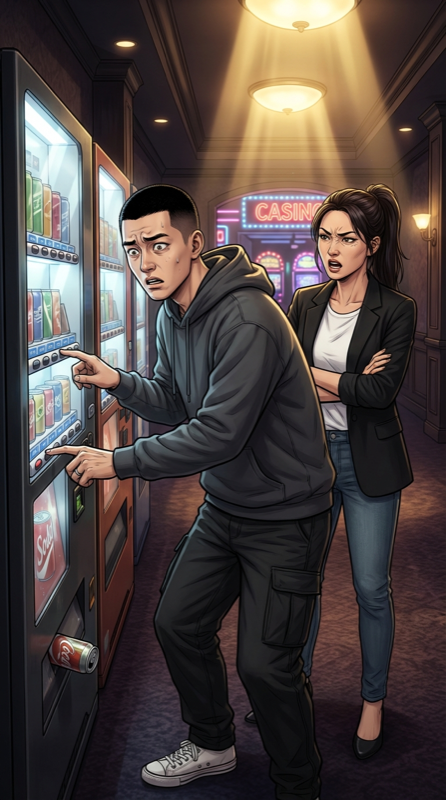
赌场走廊 · 中景
秦默站在自动售货机前，表情罕见地慌了。
他按了三个按钮，投了两次币，饮料卡在出口不上不下。
秦默（小声）："……出来。"
他开始用手拍售货机。
赵姐 · 特写
赵姐一只手扶额，眼睛闭上了。
赵姐内心：（我到底带了个什么回来……）
系统："建议宿主放弃售货机。胜率：3%。"
· · · · ·
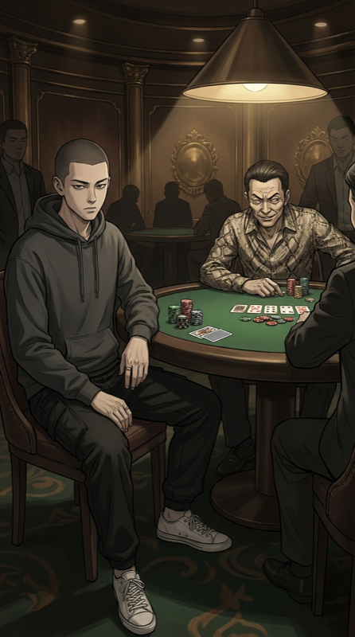
铜级赌场 · 德州扑克桌 · 广角
绿色牌桌。筹码。两个人对坐。
对面是铜级老牌——"蛇眼"。瘦长脸、三角眼、蛇纹丝绸衬衫。一看就不是善茬。
蛇眼："赵姐带来的新鲜肉？"
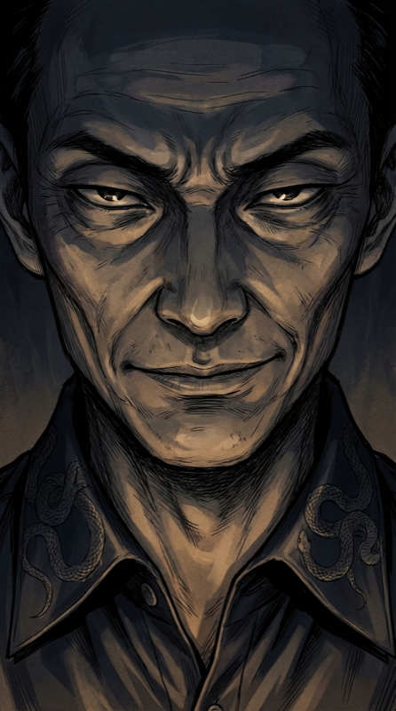
蛇眼 · 大特写
蛇眼的三角眼微微眯起，嘴角勾出一丝蔑笑。
在铜级混了五年，还没输过给新人。
蛇眼："小子，入场费两千。输光了就从哪来回哪去。"
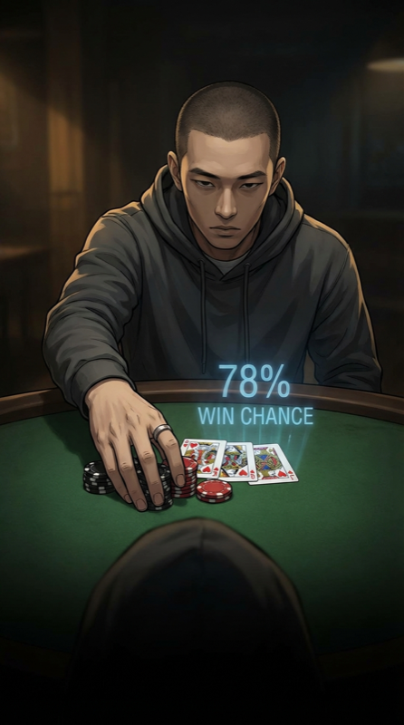
秦默视角 · 过肩镜头
秦默看着手中的牌——概率浮窗显示胜率78%。
他把筹码推出去。弃牌。
系统："宿主？这把能赢啊？你在干什么？"
（让他赢。先让他觉得我是废物。）
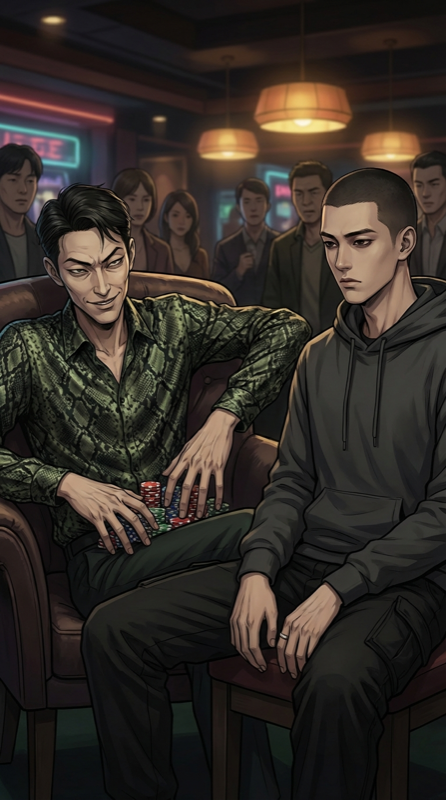
蛇眼 · 中景
蛇眼得意地把筹码划拉到自己面前，翘起二郎腿。
蛇眼："就这？赵姐的眼光也不过如此嘛。"
周围几个看客窃笑。
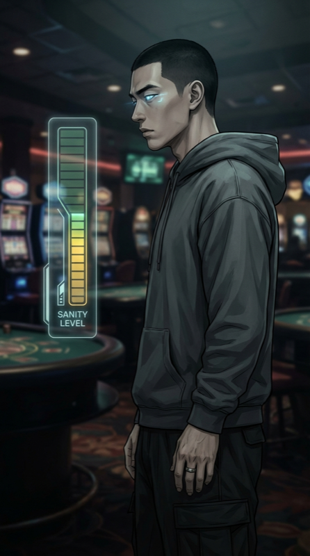
秦默脸部侧面 · 特写
蓝光在秦默眼底若隐若现。理智值的全息条已经从绿色变成了黄色。
系统："理智值消耗提醒：当前72%。每次启动概率浮窗消耗5%。请合理使用。"
系统："另外，宿主的演技堪忧。理智值额外扣0.5%——因为看不下去。"
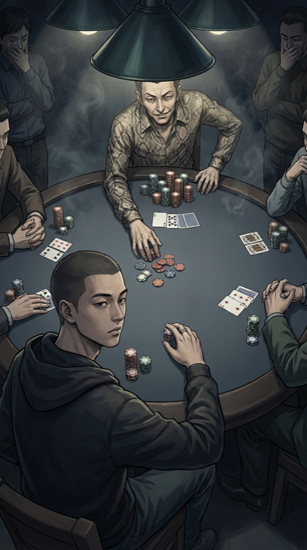
牌桌俯瞰
第二把，秦默又弃了。
蛇眼的筹码堆成了小山，秦默面前只剩薄薄一层。
力量对比悬殊得几乎可笑。
看客们开始摇头——"完了，这新人要被清零了。"
赵姐 · 阴影中 · 中近景
赵姐站在暗处，双臂交叉，眼睛眯起。
烟雾从她身边飘过。
赵姐内心：（连输两把，但他的手……一点都不抖。）
（这小子在装。）
· · · · ·
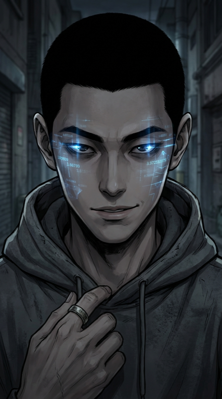
秦默双眼 · 极致特写
第三把牌发下来的瞬间，秦默眼底的蓝光骤然变亮。
概率数字疯狂跳动——96%。
嘴角几乎不可察觉地微微上扬了0.5毫米。
这是秦默今晚唯一的表情变化。
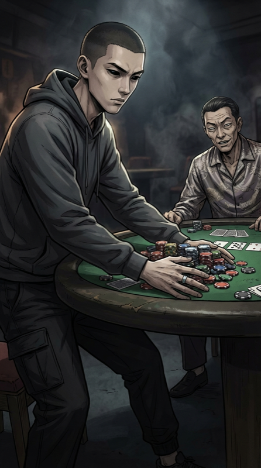
全 押。
低角度仰拍
秦默双手把所有剩余筹码推向桌子中央。
从这个角度看上去，他像一个把一切都押上去的赌徒。
但只有他知道——这不是赌博，是数学。
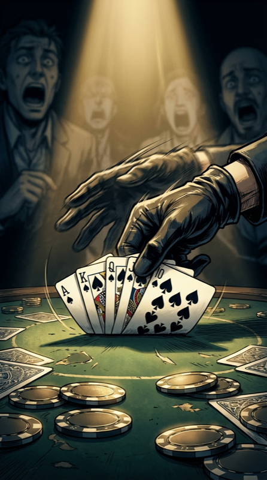
啪——！
牌面特写
牌摊在绿色桌面上。
秦默的牌——完美碾压。
全场静了半秒。然后炸开了锅。
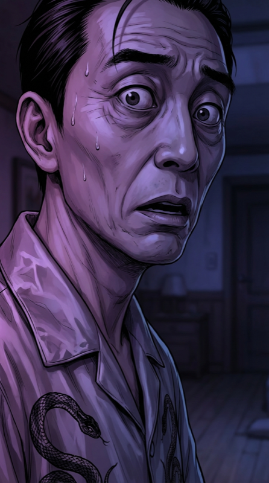
蛇眼 · 大特写
蛇眼的脸僵住了。
那个自信的蔑笑碎成了渣，取而代之的是纯粹的不可置信。
蛇眼："不……不可能……我做了标记的牌……"
他说到一半，自己捂住了嘴。
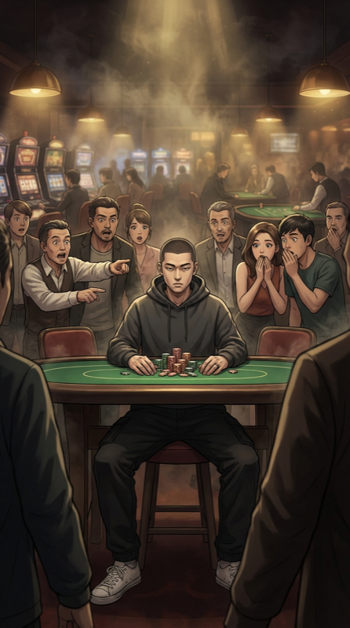
赌场全景 · 人群反应
看客们站了起来。有人指指点点，有人倒吸凉气。
"他刚才不是一直在输吗？"
"故意的吧……这是钓鱼啊！"
秦默坐在筹码堆里，像什么都没发生一样。
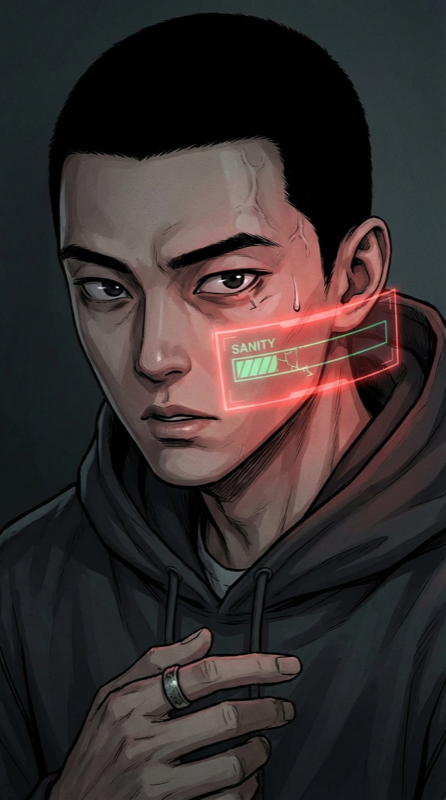
秦默脸部 · 特写
但没人注意到，秦默的太阳穴上青筋微微鼓起。
他的眼睛开始发酸，视野边缘出现了模糊。
系统："⚠ 理智值28%。进入警戒区。建议立即停止使用概率浮窗。"
系统："再不停的话，下一次你醒来可能在医院里。或者更糟。"
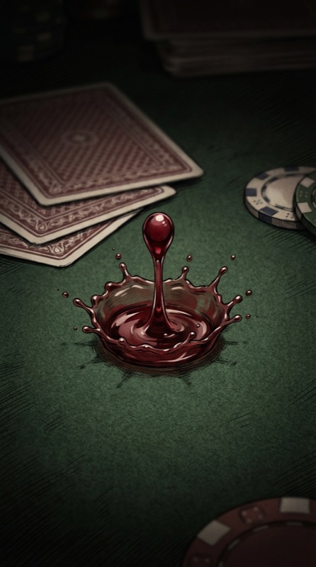
微距特写
一滴鲜血从鼻腔滴落，落在绿色牌桌上，在扑克牌旁边晕开一个小小的红点。
没人注意到。
除了秦默自己。
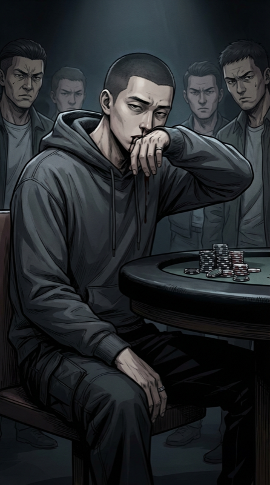
中景
秦默假装不经意地用卫衣袖子擦了一下鼻子。
袖口上留下一道浅红色的痕迹。
（代价来了。）
他的面前堆着赢来的全部筹码，但他的目光落在那滴血上。
赵姐从暗处走出 · 中景
赵姐从阴影中走出来，缓缓鼓掌。
掌声不大，但在安静下来的赌场里格外清晰。
赵姐："秦默。有点意思。"
她的眼里有兴趣，也有算计。
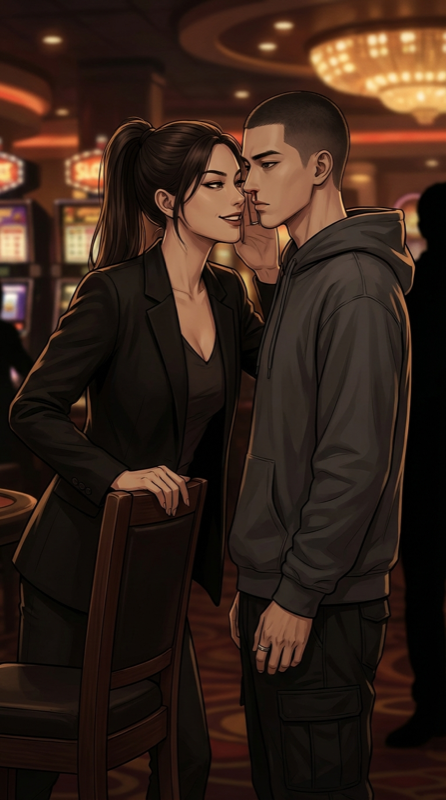
双人近景 · 耳语
赵姐绕到秦默身后，俯身在他耳边。
赵姐（低声）："铜级太小了。银级要不要试试？"
秦默："……银级赌注多少？"
赵姐："起步十万。"
秦默沉默了。鼻血在他嘴唇边上又渗出一滴。
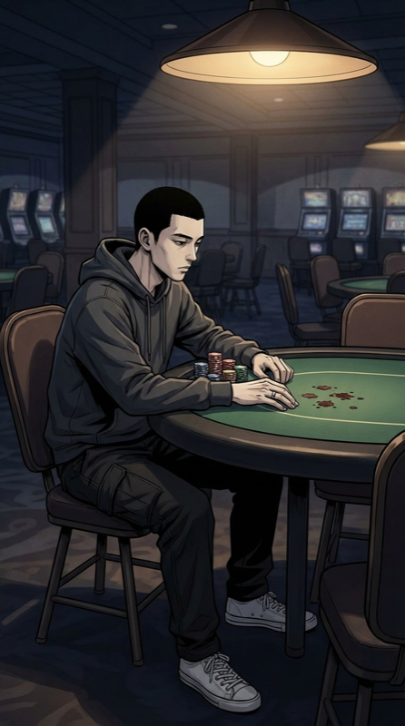
空荡赌场 · 广角
人群散了。赌场关灯了大半。
秦默独自坐在牌桌前，面前是一堆筹码，脚下是几滴血迹。
头顶孤灯，照出一个小小的光圈，像是聚光灯，又像是牢笼。
系统："理智值已恢复至31%。建议宿主回家睡觉。明天还有更大的麻烦等着你。"
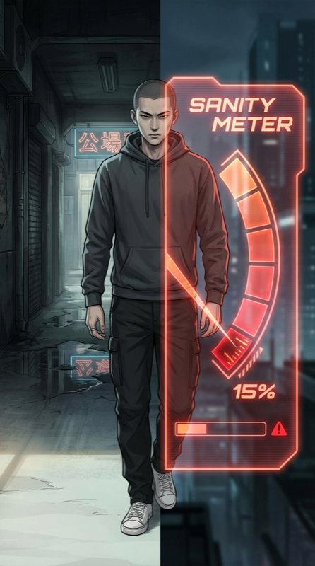
结尾 · 破晓巷口
秦默走出暗巷，天边泛起鱼肚白。
他抬头看了一眼天空，然后低头看了一眼自己沾着血的袖口。
（赌神……吗。）
（代价倒是挺公平的。用命换钱。）
（但我好像……没有别的选择了。）
未 完 待 续
银级赌场。十万起步。
赌术更狠，对手更强，
而秦默的理智值……所剩无几。
第二章：银色陷阱
敬请期待